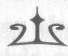

BÖLÜM YİRMİ
NOEL HEDİYEM YENİ BİR DÜŞMAN
Olimpos'u terk etmeden önce birkaç görüşmede bulunmak istedim. Kolay olmadı ama en sonunda bahçenin sessiz bir köşesini bulabildim. Buradaki bir fıskiyeden denizlerin altındaki kardeşim Tyson'a bir İris mesajı yolladım. Ona serüvenlerimizi, Bessie'yi (bu Şirin, bebek inek-yılan hakkında her şeyi duymak istedi) anlattım ve Annabeth'in güvende oldu-
ğunu söyledim. En sonunda, geçen yaz benim için yaptığı kalkanın mantikor saldırısında zarar gördüğünü anlatabildim.
"Vay!" dedi Tyson. "Yani iyiymiş! Hayatını kurtarmış!"
"Kesinlikle öyle, iri adam," dedim. "Ama şimdi mah-voldu."
"Mahvolmadı!" diye söz verdi Tyson. "Gelecek yaz ziya-rete gelip tamir edeceğim."
Bu fikir çok hoşuma gitti. Tyson'ın ortalıkta oluşunu çok özlemiştim.
"Cidden mi?" dedim. "Sana tatil izni verecekler mi?"
"Evet! İki bin yedi yüz kırk bir tane sihirli kılıç yaptım,"
dedi Tyson gururla ve en son yaptığı kılıcı gösterdi. "Patron,
'iyi iş' dedi! Tüm yaz bana izin verecek. Kampa geleceğim!"
Bir süre savaş hazırlıklarından, babamın eski deniz tanrıları ile kavgalarından ve gelecek yaz beraberce yapabileceğimiz keyifli şeylerden bahsettik. Ama sonra Tyson'ın 294
NymphE
patronu ona bağırmaya başlayınca, işe dönmek zorunda kaldı.
Son altın drahmimi çıkarttım ve bir İris mesajı daha yolladım.
"Sally Jackson. Kuzey Doğu Yakası, Manhattan."
Sis parıldadı ve mutfak masasındaki annem belirdi.
Arkadaşı Bay Blöfiş'le el ele tutuşuyordu.
O kadar utandım ki. Sisin içinde elimi sallayıp bağlantıyı kesecektim. Ama elimi sallamaya fırsat kalmadan annem beni gördü.
Gözleri fal taşı gibi açıldı. Çarçabuk Bay Blöfiş'in elini bırakü. "Ya, Paul, aklıma ne geldi bak. Yaratıcı yazı dergimi oturma odasında bırakmışım. Mahsuru yoksa gidip getirir misin?"
"Tabii, Sally. Sorun değil."
Adam odadan çıktı ve annem anında İris mesajına doğru eğildi. "Percy! Sen iyi misin?"
"Ben, eh, iyiyim. Yazma seminerleri nasıl gidiyor?"
Dudaklarını büzdü. "İyi gidiyor. Ama bu konu önemli değil. Neler oldu anlatsana!"
Olabildiğince çabuk bir şekilde olup biteni anlattım.
Annabeth'in güvende olduğunu duyunca, rahatladı, iç geçirdi.
"Bu işi başarabileceğini biliyordum!" dedi. "Seninle gurur duyuyorum."
"Evet, pekala. Bırakayım da sen ev ödevine dön."
"Percy. Ben... Paul ve ben..."
"Anne, mutlu musun, onu söyle sen."
Bu soru onu gafil avlamıştı. Bir süre düşündü. "Evet, ger-
çekten öyleyim Percy. Onun etrafımda olması beni mutlu ediyor."